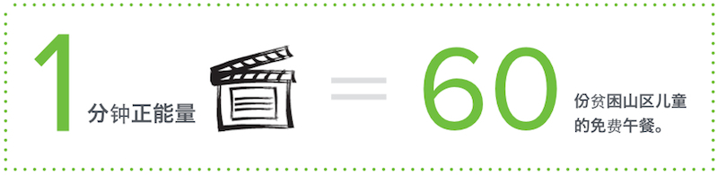

“单行道”行动将于2014年5月正式启动。
截止美国西部时间 2014-04-11 11:45 , 已有：
次点赞转发
x 1份免费午餐

21 张发现中国照片
x 10份免费午餐
13 段正能量故事
x 60份免费午餐
0 公里骑行
x 5份免费午餐
= 1256 份免费午餐 捐献给贫困山区的孩子们
截止美国西部时间 2014-04-11 11:45 , 已有：
次点赞转发
x 1份免费午餐
21 张发现中国照片
x 10份免费午餐
13 段正能量故事
x 60份免费午餐
0 公里骑行
x 5份免费午餐
= 1256 份免费午餐 捐献给贫困山区的孩子们

你不用出一分钱，只要一点力所能及的行动，
就有企业因为你的每一次付出向公益募捐。
微公益的核心，是所有人的共同参与。下面是加入我们的三种方式：
在社交媒体（微信、微博、人人、Facebook）与单行道互动

＃我在世界发现中国＃随手拍下你身边的中国元素
＃一分钟⋅微纪录＃
用1分钟视频纪录你留学的正能量
每个留学生都有自己的故事。让我们一起用一分钟的视频，纪录自己生活中的正能量。
关于视频，我们建议：
1) 开头：“大家好，我叫XXX，现就读于/毕业于XXX大学“
2) 结尾："我以这样的方式，支持单行道，你呢？“
4) 长度不超过1分钟，鼓励各种创意！
请将拍好的视频以“单行道微纪录”为邮件标题，用Dropbox或邮件的分享至： contact@danxingdao.org
为你的每一段正能量故事，爱心企业将向贫困山区的孩子捐出 60份午餐

作为单行道的发起者，2014年夏天，我们将从美国西部旧金山出发，骑自行车横穿美国大陆11个州，
终点美国首都华盛顿。骑行总长6000余公里，预计总历时2个月。
“免费午餐”计划是本次单行道行动的独家合作公益组织
“免费午餐”计划是由邓飞等500多名记者和国内数十家媒体联合中国社会福利教育基金会发起的公益项目。该项目倡议每天捐赠3元钱，为贫困地区学童提供免费午餐。自2011年4月启动以来，得到了社会各界的支持，截止2013年12月，募款已超过7000万元，累计开餐学校超过350所，共有超过77000名贫困孩子们免于饥饿。受此计划影响，国务院启动实施农村义务教育学生营养改善计划，大规模改变中国乡村儿童营养状况。


我们希望通过“免费午餐”这样一个实际的成功例子，
让更多海外学子了解那些正在用行动改变中国的公益行动。
“永远不要怀疑一小撮坚定执着的人能否改变世界。事实上，世界从来都是这样被改变的。”


作为一个从小到大在城市里长大的人，大学期间在农村支教的经历对我的影响是一辈子的。六次下农村的经历，让我体会了农村孩子上学的艰辛和当地人生活的不易，却同时深感自己力量的杯水车薪。出国留学已经六年了，身在阳光明媚的洛杉矶却忘不了安徽白际乡寒冷的冬天，孩子们手中的铝制饭盒：半盒白饭，一层梅干菜。总是希望还能做些什么。
－张江扬
从高中时救助流浪猫、传递动物福利思想，到大学时支教山村、思考农村变革，再到现在努力学习和实践环保教育，我一直希望以后我们的孩子和其他小生命们都能有一个更好的生存环境。身边总有些不尽人意之处，让我们觉得自己渺小无措。但是，如果更多的人能把恻隐之心转化为行动，或许我们能一起带来一些美好的改变。
－姚立莉
大部分人做很多事情需要充分的理由，而我都是凭着瞬间的感动。偶尔看到一张孩子们等饭吃的照片，心里说不出来得难受。如果做点事能改变一些，哪怕是一点点，我想我都会说：我来吧。就像在一条单行道上，哪怕是能给出一点点的温暖，我想我也会毫不犹豫的伸出手一样。
－张晨辰
有些事情趁我们还敢想，就要努力去实现。
问：我不是海外留学生，我能加入单行道的行动吗？
答：当然。虽然我们的宣传主要专注于海外留学生及年轻人，但我们欢迎所有人的积极参与。
问：你们怎么保证，我付出的每一点行动都会转化成免费午餐？
答：我们提前和企业已经达成了认捐协议，对于单行道行动参与者的每一个实际行动，企业都会向“免费午餐”计划捐出相应数额的午餐。
问：为什么要选择“免费午餐”计划作为合作组织？最终企业募捐资金的去向会公示吗？
答： 免费午餐”计划是中国目前在总体影响力和资金透明度上做得非常优秀的项目。其他优秀的公益项目还有许多，但我们希望通过“免费午餐”这样一个具体的公益项目，让更多的海外留学生和年轻人和关注公益。所有募捐资金的去向将会公布在免费午餐的官方网站上。
问：你们这次骑行美国的路线是什么？
答：我们本次横穿选择的路线是Adventure Cycling系统的Wester Express和 TransAmerica Trail。我们骑行的平均速度是每天60-70英里，平均爬升0-6000英尺，骑6天休息1天。
问：你们的行动什么时候正式开始，什么时候结束？
答：“单行道”行动的筹备已于2014年2月启动，微公益行动计划于2014年5月初正式启动，并于2014年9月初结束。
问：我没办法参加骑行，怎样可以支持你们？
答：单行道呼吁大家从身边的小事做起，有三种方式可以加入我们：1）最简单的点赞，2）拍一张照片@我们的微博，3）用一分钟的视频纪录的正能量，具体方式请见这里。
今年夏天，我们以骑行横穿美国的方式支持中国公益，你呢？